Mercury
Mercury is the closest planet to the Sun in the solar system, the smallest of the terrestrial planets. Named after the ancient Roman god of trade, Mercury is fast because it moves through the sky faster than other planets. Its period of revolution around the Sun is only 87.97 Earth days - the shortest among all the planets in the solar system.
The apparent distance of Mercury from the Sun, as seen from Earth, never exceeds 28°. This proximity to the Sun means that the planet can only be seen for a short time after sunset or before sunrise. sun, usually at dusk
In a telescope, Mercury can see phases that vary from a thin crescent to an almost full disk, like Venus and the Moon, and sometimes it passes over the disk of the Sun. The period of the phases of Mercury is equal to the synodic period his circulation is approximately 116 days.
Mercury was visited by two spacecraft: in 1974 and 1975, Mariner 10 flew near it, and from 2008 to 2015 it was explored by MESSENGER.
The latter in 2011 went into orbit around the planet and, having made more than 4,000 orbits around it in four years, on April 30, 2015, it used up fuel and crashed into the surface. It is planned that in 2025 to Mercury the BepiColombo spacecraft will arrive.
Diameter
The diameter of Mercury is 4880 km. It is the smallest planet in the solar system. Jupiter's moon Ganymede and Saturn's moon Titan are larger than Mercury.
Atmosphere
Mercury does not have a full atmosphere. The concentration of atoms of various gases near its surface is several orders of magnitude less than at the altitude of the ISS orbit.
Interesting fact
Mercury is one of two rocky planets in the solar system that has a permanent magnetic field (the other such planet is our Earth). The power of this field is about 100 times less than that of the earth.
Orbit
Mercury has the most elongated orbit of all the planets in the solar system. At perihelion it approaches the Sun by 46 million km, at aphelion it moves away by 70 million km.
Venus
Venus is the second farthest from the Sun and the sixth largest planet in the solar system, along with Mercury, the Earth and Mars, belonging to the family of terrestrial planets. Named after the ancient Roman goddess love of Venus. According to a number of characteristics - for example, in mass and size - Venus is considered the "sister" of the Earth.
Venus has no natural satellites. It is the third brightest object in the Earth's sky, after the Sun and Moon. The planet reaches an apparent magnitude of −4.6m, so it's bright enough to cast shadows. at night. Occasionally, Venus is visible to the naked eye and during daylight hours.
As one of the brightest objects in the sky, Venus has become an important element in human culture. It is the first planet for which movement across the sky was recorded at the beginning of the second millennium BC. As the closest planet to Earth, Venus was a prime target for early interplanetary exploration.
It is also the first planet visited by spacecraft (Mariner 2 in 1962) and landed on (Venera 7 in 1970). The dense clouds of Venus make observing its surface impossible in visible light, and the first detailed maps of the surface appeared only after the arrival of the Magellan spacecraft in 1991.
Atmosphere
The density of the atmosphere of Venus is 6.5% of the density of liquid water on Earth. Under these conditions, carbon dioxide actually acquires some of the properties of a liquid.
Rotation
Unlike most planets in the solar system, Venus rotates retrograde, in the opposite direction of its orbital motion.
Intresting Fact
Venus makes one revolution around the Sun in 224 Earth days, while the period of rotation of the planet around its axis is 243 days. Thus, the Venusian year is shorter than the Venusian day, counted in the "star" coordinate system. However, a solar day there lasts 117 Earth days.
Magnetic field
Venus has no magnetic field. Because of this, the solar wind gradually “blows out” all light gases from it, including water vapor, which is contained there in small quantities. It is believed that he may be a remnant of an ancient ocean that supposedly existed on Venus in the distant past.
Earth
Our home planet is the third planet from the Sun and the only place known to us inhabited by living beings.
Although Earth is only the fifth largest planet in the solar system, it is the only world in our solar system with liquid water. on the surface. Slightly larger than neighboring Venus, Earth is the largest of the four planets closest to the Sun. which are made of stone and metal.
The name Earth is at least 1000 years old. All planets except Earth were named after the Greeks and Romans. gods and goddesses. However, the name "Earth" is a Germanic word meaning simply "earth".
Our home planet Earth is a rocky terrestrial planet. It has a hard and active surface with mountains, valleys, canyons, plains and more. Earth is special because it is an ocean planet. Water covers 70% of the Earth's surface.
Earth's atmosphere is mostly nitrogen and contains a lot of oxygen that we can breathe. The atmosphere also protects us from incoming meteoroids, most of which disintegrate before they hit. to the surface.
Age
It is believed that the age of the earth is approximately 4.5 billion years. The age was established by taking into account the meteorites that fell to the Earth during its formation. Again, calling these facts unambiguous is scientifically incorrect. due to the lack of reliable evidence.
Shape
Some people think that the Earth is a perfect sphere. In fact, things are a little different. At the equator, our planet is slightly convex, so the speed of the Earth's rotation is higher there. Interesting fact, that the shape of the globe was called the "geoid".
Interesting fact
One Earth year is the time it takes the planet Earth to complete one revolution around the sun. The length of the path is 938,886,400 km. We cover this distance in 365.24 days. We round the calendar year up to 365 days, no ponytail. But in science there are no superfluous "tails".
Rotation
An interesting fact is that the rotation of the Earth around the Sun can be explained by its fall. The gravity (attractive force) of the Sun causes the Earth to rotate around itself and around its axis in the same way as Earth's gravity makes a ball thrown from a mountain roll. The speed at which the Earth moves around the Sun is approximately 29.765 km/s.
Mars
Mars is the fourth largest planet from the Sun and the seventh largest planet in the solar system; the mass of the planet is 10.7% of the mass of the Earth. Named after Mars, the ancient Roman god of war, corresponding to the ancient Greek Aresu. Also, Mars is called the "red planet" because of the reddish tint of the surface, given to it by the mineral maghemite - γ-iron(III) oxide.
Mars is a terrestrial planet with a rarefied atmosphere (the pressure on the surface is 160 times less than Earth's). Go to the section "#Atmosphere and climate" The features of the surface relief of Mars can be considered shock lunar-like craters, as well as volcanoes, valleys, deserts, and polar ice caps like those on Earth.
Since 1962, direct exploration of Mars with the help of AMS has been carried out in the USSR (programs "Mars", "Phobos") and the USA (programs "Mariner", "Viking", "Mars Global Surveyor" and others), as well as the European space agency (Mars Express program), India (Mangalyan program), and China (Tianwen-1, Zhurong). To date, Mars is the most extensively studied planet in the solar system after Earth.
Diameter
The diameter of Mars is 6780 km. It is smaller than Venus and Earth, but larger than Mercury. The force of gravity on the surface of the Red Planet is 37% of that of the earth.
Temperature
The temperature on Mars ranges from -153°C at the poles in winter to +25°C at the equator in summer, in temperate latitudes - from -50°C in winter nights to 0°C in summer days. The average temperature of the Red Planet is -55°C.
Magnetic field
Mars currently has no global magnetic field. However, there are magnetized areas in its crust, indicating that the planet possessed it in the distant past.
Interesting fact
The length of a mean solar day on Mars (called sols) is 24 hours 39 minutes 35 seconds. This is only 2.7% longer than an Earth day. The Martian year consists of 668.6 sols.
Jupiter
Jupiter is the largest planet in the solar system and the fifth furthest from the sun. Along with Saturn, Uranus and Neptune, Jupiter is classified as a gas giant.
The planet has been known to people since ancient times, which is reflected in the mythology and religious beliefs of various cultures: Mesopotamian, Babylonian, Greek and others. Modern name for Jupiter comes from the name of the ancient Roman supreme god of thunder.
The name Earth is at least 1000 years old. All planets except Earth were named after the Greeks and Romans. gods and goddesses. However, the name "Earth" is a Germanic word meaning simply "earth".
Jupiter has at least 80 satellites, the largest of which - Io, Europa, Ganymede and Callisto - were discovered by Galileo Galilei in 1610. Research on Jupiter is carried out using ground and orbital telescopes; Since the 1970s, 8 NASA interplanetary vehicles have been sent to the planet: Pioneers, Voyagers, Galileo, Juno and others.
Ring system
Jupiter also has a faint ring system. Basically, its rings are composed of dark dust particles knocked out by meteorites from the planet's outer moons.
Satellite
Jupiter has a large satellite family, which is often referred to as the "miniature solar system". To date, astronomers are aware of 69 moons of the gas giant.
Surface
The gas giant does not have a solid surface, which is so familiar to us on Earth. Jupiter is mainly composed of gas and liquid. The spacecraft cannot land or fly through the planet due to the extreme pressure and high temperatures that would destroy or melt it.
Interesting Fact
Scientists still don't know exactly what Jupiter's core looks like. It is believed that it may consist of solids or of a thick and very hot liquid that resembles lava. However, it is now known that the core of Jupiter is surrounded by a layer of liquid metallic hydrogen. It extends 90% of the radius of the planet
Saturn
Saturn is the sixth planet in terms of distance from the Sun and the second largest planet in the solar system after Jupiter. Saturn, as well as Jupiter, Uranus and Neptune, are classified as gas giant planets. Saturn named in honor of the Roman god of agriculture. Saturn's symbol is ♄.
Saturn has a prominent ring system, consisting mainly of ice particles, a smaller amount of heavy elements and dust.Go to the section "#Rings" There are currently 82 known orbiting around the planet satellite moment. Titan is the largest of them, as well as the second largest satellite in the solar system (after Jupiter's moon Ganymede), which is larger than Mercury and has a single among the satellites of the planets of the solar system by a dense atmosphere.
In orbit around Saturn was the Cassini Automatic Interplanetary Station (AMS), launched in 1997 and reaching the Saturn system in 2004. The tasks of AMS included the study of the structure of rings, as well as the dynamics atmosphere and magnetosphere of the planet. On September 15, 2017, the station completed its mission by burning up in the planet's atmosphere.
Interesting fact
Saturn is the farthest planet in the solar system that can be clearly seen in the sky with the naked eye (Uranus is only visible in very dark skies with good vision).
Dense
Saturn is the least dense planet in the solar system. Its average density is 0.68 g/cm3, which is almost a third less than the density of water.
Interesting fact
The low density and relatively fast period of rotation around its axis (about 10.5 hours) also make Saturn the most "oblate" planet in the solar system. Its equatorial diameter is 120 thousand km, which is 10 thousand km more than the polar diameter.
Interesting fact
On average, Saturn is 1.4 billion km from the Sun. It takes 29.5 years to make one revolution around our star.
Uranus
Uranus is the planet of the solar system, the seventh in distance from the Sun, the third in diameter and the fourth in mass. It was discovered in 1781 by the English astronomer William Herschel and named after the Greek god. the sky of Uranus.
Uranus was the first planet discovered in modern times and with the help of a telescope. It was discovered by William Herschel on March 13, 1781, thereby for the first time since antiquity expanding the boundaries of the solar system in the eyes of person. Although sometimes visible to the naked eye, Uranus was mistaken for a dim star by earlier observers.
In 1986, the American spacecraft Voyager 2 transmitted close-up images of Uranus to Earth. They show an "inexpressive" planet in the visible spectrum without cloud bands and atmospheric storms, characteristic of other giant planets
Uranus day
A day on Uranus lasts 17 Earth hours, and a year is 84 Earth years. Uranus has 27 moons. Up to 80% of Uranus consists of liquids, and in the center of the planet there is a solid core. Uranus is one of the ice giants. Atmosphere Uranus is composed primarily of hydrogen and helium, with a few percent methane.
Interesting fact
Uranus has only been visited by a spacecraft once. Uranus rotates around its axis, "lying on its side", as its axis is tilted 99 degrees. From the surface of the Earth, Uranus with great difficulty, but you can see with the naked eye. Uranus appears visually blue-green due to the presence of a small amount of methane in the atmosphere.
Surface of Uranus
The ice giant Uranus does not have a solid surface. Its gaseous atmosphere passes into the inner liquid shell. You cannot walk on the surface of Uranus or land a spacecraft on it - you will simply drown. By the way, the same thing will happen on Jupiter.
Structure of Uranus
Uranus is made up of three layers: a small core of iron and nickel in the center, an icy shell in the middle, and a hydrogen-helium atmosphere containing methane on the outside. The planet's ice shell (more than 80% of the mass) consists of a hot and dense liquid, which is a mixture of water, methane and ammonia.
Neptune
Neptune is the eighth and farthest planet from the Sun in the solar system. Its mass exceeds the mass of the Earth by 17.2 times and is the third among the planets of the solar system, and in terms of equatorial diameter, Neptune occupies fourth place, surpassing the Earth by 3.9 times. The planet is named after Neptune, the Roman god of the seas.
Discovered on September 23, 1846[11], Neptune was the first planet to be discovered through mathematical calculations[12]. The discovery of unpredictable changes in the orbit of Uranus gave rise to the hypothesis of an unknown planet, gravitational perturbing influence of which they are due. Neptune was found within the predicted orbit. His satellite Triton was soon discovered, but the remaining 13 satellites were not explored until XX century. Neptune has only been visited by one spacecraft, Voyager 2, which flew by the planet on August 25, 1989.
Neptune is close in composition to Uranus, and both planets differ from the larger giant planets Jupiter and Saturn. Sometimes Uranus and Neptune are placed in a separate category of "ice giants"
Formation of Neptune
Like the rest of the planets in the solar system, Neptune formed about 4.5 billion years ago. Scientists believe that the blue planet used to be closer to the Sun than it is now, and took its current position in the outer solar system about 4 billion years ago.
Satellites of Neptune
Like other giant planets, Neptune has a large system of natural satellites. All of the ice giant's moons were named after water-related deities from Greek and Roman mythology.
Structure
Little is known about the structure of Neptune. Most likely, this ice giant is similar to Jupiter, Saturn and Uranus - a cold atmosphere that becomes denser as you sink into it, up to a smooth transition into the likeness of the ocean, as well as a solid core in the depths of the bowels.
Interesting fact
Since its discovery, Neptune has made only one revolution around the Sun, that is, only one year has passed on it. The ice giant was discovered in 1846, and the year on it lasts 164.79 Earth years, so the first revolution since opening, it completed on July 12, 2011.
Pluto
Pluto (134340 Pluto) is the largest (along with Eris) dwarf planet in the Solar System, a trans-Neptunian object and the tenth largest (excluding satellites) celestial body orbiting the Sun. Pluto was originally classified as a planet, but is now considered one of the largest objects in the Kuiper belt.
Pluto was discovered in 1930 by American astronomer Clyde Tombaugh. Tombo first observed it at the Lowell Observatory. In 1906, the founder of the observatory, Percival Lowell, launched a project to search for the “planet X” is how he named the hypothetical ninth planet of the solar system, which, in his opinion, influenced the orbits of Uranus and Neptune. Lowell died in 1916 without having found "Planet X". However, the search for a mysterious the planets continued until February 18, 1930, when Clyde Tombaugh finally found Pluto.
Immediately after the discovery, he was given the status of a planet - the smallest and most distant in the solar system. However, in subsequent years, scientists discovered many objects similar to Pluto outside the orbit. Neptune. Some of them (for example, Eris) are large enough to be classified as planets too. That is why in 2006 the International Astronomical Union (IAU) decided change the definition of the term "planet" and transferred Pluto to the category of dwarf planets.
Interesting fact
When Pluto was first discovered it was given the name Planet X, but then something better and more permanent was needed. The name Pluto was suggested by Venetia Burney, an 11-year-old schoolgirl from Oxford (England). She thought the name would suit such a cold and dark place. When the name was proposed to the researchers, they liked the idea.
Size
Pluto is very small. But how much? Astronomers recently calculated that its mass is 1.31 x 1022 kg (less than 0.24% of the mass of the Earth) and its diameter is only 2390 km. From this point of view, Pluto is smaller Mercury and seven natural satellites: Ganymede, Titan, Callisto, Io, Luna, Europa and Triton. Today, astronomers know that Pluto is smaller than another dwarf planet, Eris.
Interesting fact
Pluto is approximately half rock and ice. The same applies to many rocky comets in the solar system. If Pluto could get even closer to the Sun, then his tail "grew" and he turned into a comet.
Interesting fact
The New Horizons spacecraft launched to Pluto in 2005. After 10 years (in March 2015), the device approached Pluto at a distance of less than 1 AU. And already on May 12, 2015, the filmed "New Horizons" photographs showing all currently known satellites of Pluto.
Comet
Comets are large objects of dust and ice that orbit the sun. Best known for their long, flowing tails, these ancient objects are remnants from the formation of the 4.6 billion solar system. years ago.
Where do comets come from? Other comets live in the Oort Cloud, the spherical outer edge of the solar system, which is about 50 times further from the Sun than the Kuiper belt. They are called long-term comets because they take much longer to revolve around the sun. The comet with the longest known orbit takes over 250,000 years to make just one trip around the sun!
Comets are mostly found outside the solar system. Some exist in a wide disk outside of Neptune's orbit. called the Kuiper belt. We call them short period comets. They need less than 200 years to complete an orbit around the sun..
What brings comets closer to Earth so we can see them?
The gravity of a planet or star can pull comets out of their Kuiper belt or Oort cloud homes. This tug can redirect a comet towards the Sun. The paths of these redirected comets look like long elongated ovals.
As the comet pulls faster and faster towards the Sun, it turns around after the Sun and then comes back. to where it came from. Some Comets Dive Directly into the Sun, and There Are More never see. When a comet is in the inner solar system, coming or going, then we can see it in our sky.